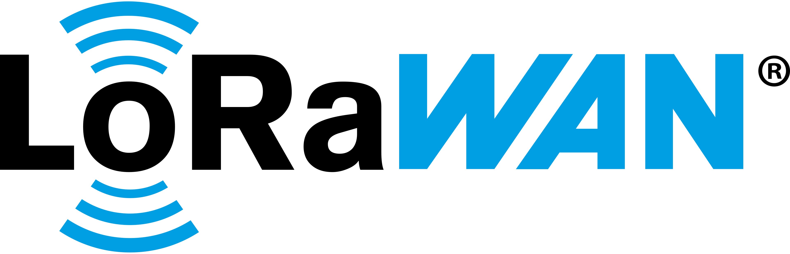
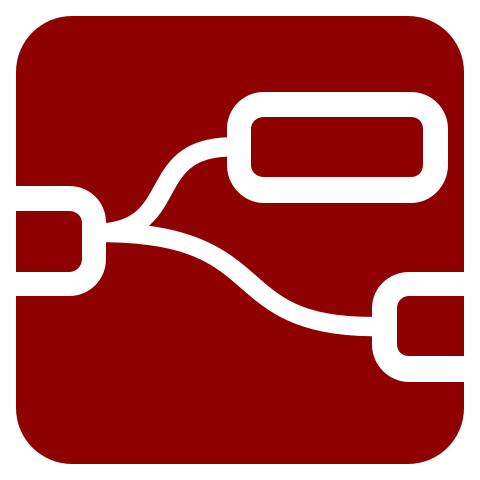
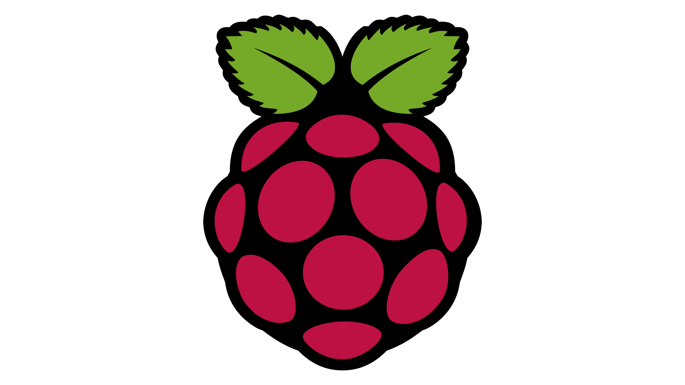

Weekly Standup
Local Setup Progress, Technical Discoveries & Real-World Agricultural Ideas




Node-RED
Macro vs. Microclimate Intelligence
Moving from general weather forecasts to canopy-level crop protection with ChirpStack.
I configured our central ChirpStack network server locally in our lab environment to process multi-sensor data streams.
As I set up the decoders, I realized how dense, ultra-low-power sensor arrays can capture micro-variations across different crop zones instead of relying on a single weather station.
• Early Disease Modeling: Fungal blights and crop diseases thrive in localized humidity pockets inside crop canopies long before regional humidity changes.
• Targeted Protection: Continuous canopy tracking lets agronomists predict disease risks days early and apply targeted crop protection only where needed.
Data Sovereignty & Visual Farm Scoreboards
Storing readings safely in PostgreSQL and turning data into clear Grafana scoreboards.
I connected a local PostgreSQL database to record sensor uploads and built visual Grafana scoreboards with color-coded gauges and trend graphs.
Storing data locally in a flexible format allows us to add new types of sensors in the future without changing our database setup.
• 100% Data Sovereignty: All farm history remains stored on our own equipment—no third-party cloud vendors locking our farm data behind subscription paywalls.
• Data-Driven Decisions: Replaces manual field check trips with clear visual screens (soil moisture, temperature, humidity) and lets managers compare trends across crop seasons.